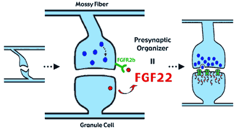

News Archives : 2004 : Finding a Presynaptic Organizer That Makes the Brain Functional
by Joshua Sanes and Hisashi Umemori
July 22, 2004
Neurons analyze and transmit information in the brain. Information is transferred from one neuron to another through the functional contact sites called synapses. When a neuron is activated, it releases a neurotransmitter from its synaptic vesicles, which are concentrated at the presynaptic axon terminal. When it receives the neurotransmitter, the postsynaptic neuron is activated via receptors that are concentrated in the postsynaptic membrane, just beneath the terminal. A paper by Umemori and Sanes ("FGF22 and its close relatives are presynaptic organizing molecules in the mammalian brain," Cell 118, 257-270, July 23, 2004) identifies a critical molecule that makes the synapse functional by recruiting synaptic vesicles to the axon terminal. [Authors Umemori and Sanes just moved from Washington University in St. Louis to MCB.]
As the nervous system develops, axons become specialized for neurotransmitter release precisely at sites of contact with their synaptic targets, indicating that target-derived factors organize presynaptic differentiation. Such presynaptic organizers have been sought for several years and, to date, several have been proposed based on a candidate approach: they seemed promising and were shown to have appropriate bioactivities when tested. However, none of them have been shown to play a critical role in vivo. Therefore, we tried to identify the critical presynaptic organizers by performing an unbiased search; we biochemically purified active molecules from mouse brain, using the ability to cluster synaptic vesicles in cultured neurons as a bioassay.
After >1,000-fold purification, a purified fraction retained vesicle aggregation activity but was specific in that it had no neurite elongation activity. The active protein in this fraction was identified by mass spectometry as FGF22. FGF22 is a member of a family of fibroblast growth factors. Its main receptor is called FGFR2. In the developing brain, FGF22 was highly expressed by granule cells in the cerebellum. The receptor FGFR2 was expressed by pontine neurons, whose axons, called mossy fibers, make synapses on the granule cells. This pattern suggested that FGF22 released from granule cells induces presynaptic differentiation of mossy fibers.
We performed four experiments whose results supported this hypothesis:1. FGF22 induced formation of functional synaptic vesicle aggregates in cultured pontine axons.
2. Inactivating FGF22 markedly reduced synapse formation between pontine axons and granule cells in culture.
3. Similarly, inactivation of FGF22 in vivo reduced formation of synapses on granule cells in developing mice.
4. Mutants lacking FGFR2 had a similar defect in pontine axon-granule cell synapses in vivo.
Interestingly, two close relatives of FGF22, called FGF7 and FGF10, have similar activities in culture but different expression patterns in vivo. They might play similar roles at other synapses.
In conclusion, we have identified FGF22 and its close relatives as molecules that the postsynaptic cell uses to organize presynaptic differentiation in its synaptic partners. Interesting questions for future study include whether application of FGF22 might augment synapses in conditions where they are present in sufficient number, such as after injury or during normal aging.

FGF is a presynaptic organizer that makes the brain functional.
During the cerebellar development, FGF22 released from granule cells induces
presynaptic differentiation of mossy fibers through the receptor FGFRb by
recruiting synaptic vesicles (blue circles) to the nerve terminal